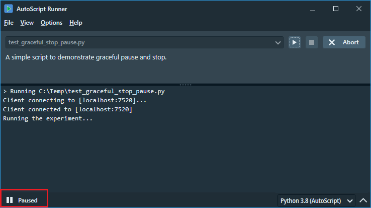
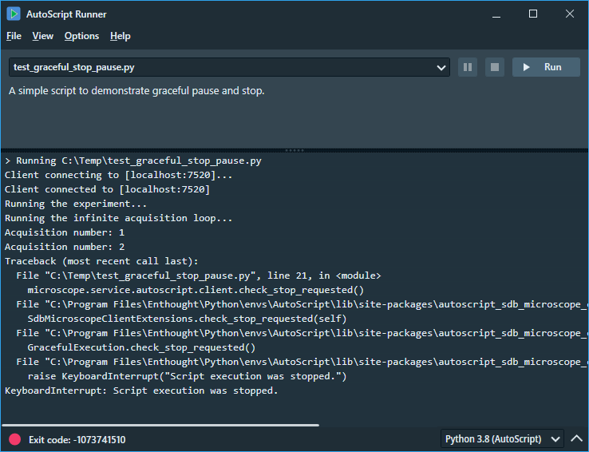

AutoScript allows a running script to be paused or stopped at a predefined script line. This gives you the ability to pause the script to check the state of the microscope and ensure that the experiment is running as expected, and possibly intervene with a manual action. In addition, script execution can be stopped in a controlled manner if it is safe to do so for reasons of data or microscope state consistency.
Two actions are required for the pause/stop functionality to work:
There are two functions that check if a pause or stop request has been made and if so, act accordingly. Place the calls in scripts where stopping or pausing is appropriate.
# Check if a pause has been requested and if so, pause the script
microscope.service.autoscript.client.check_pause_requested()
# Check if a stop has been requested and if so, stop the script execution with an exception
microscope.service.autoscript.client.check_stop_requested()
The second action to take is to request a pause or stop for the running script through the AutoScript tooling. The request can be made by clicking the appropriate button in either the AutoScript Runner or the PyCharm editor.
We want to perform an experiment on the microscope, run the first part, and then allow pausing the script for a possible state check. In the second part of the experiment, we run an infinite loop of image captures, allowing the user to stop the process at any time after the complete image has been captured and saved to disk.
import time
from autoscript_sdb_microscope_client import SdbMicroscopeClient
microscope = SdbMicroscopeClient()
microscope.connect("localhost")
print("Running the experiment...")
# Perform the first half of the experiment, we just sleep here
time.sleep(10)
# Pause the script if desired to review the intermediate results of the experiment
microscope.service.autoscript.client.check_pause_requested()
print("Running the infinite acquisition loop...")
i = 1
while True:
# Abort the loop with an exception if the user presses Stop
microscope.service.autoscript.client.check_stop_requested()
print(f"Acquisition number: {i}")
image = microscope.imaging.grab_frame()
image.save(rf"c:\Temp\image_{i}.tif")
i += 1
We can choose either the AutoScript Runner or PyCharm editor to run the script so we can create the pause/stop requests. In our example, we use the Runner and click the Pause button there. If you don't see the Pause button, make it visible by selecting View/Show Stop Pause Buttons from the main menu. Once the script execution encounters the check_pause_requested() line, the script will be paused as shown in the screenshot below.
Once the script is paused, we can resume it by clicking the Resume button or stop it by clicking the Abort button. We resume the script and then click the Stop button to terminate the script before the next image acquisition.
There are two helper functions that provide information about whether a particular action is currently requested. The following functions return a boolean value and have no effect on script execution:
# Returns True if pause is requested, False otherwise
microscope.service.autoscript.client.is_pause_requested
# Returns True if stop is requested, False otherwise
microscope.service.autoscript.client.is_stop_requested
These additional functions can be used, for example, to perform cleanup tasks before the script is actually paused or stopped.
print("Running the infinite acquisition loop...")
i = 1
while True:
# Abort the loop with an exception if the user presses Stop
if microscope.service.autoscript.client.is_stop_requested:
print("Turning beam off and stopping the script...")
microscope.beams.electron_beam.turn_off();
microscope.service.autoscript.client.check_stop_requested()
print(f"Acquisition number: {i}")
image = microscope.imaging.grab_frame()
image.save(rf"c:\Temp\image_{i}.tif")
i += 1